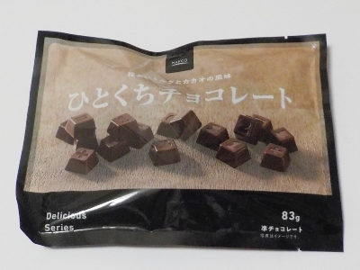

大一製菓のひとくちチョコレートを、冷蔵庫で冷やしてカチカチにして食べてます。
更新日 : 2026/10/24

常温だと柔らかめでミルキーなチョコですが、冷やして固くすると味がちょっとすっきりして好きです。
硬くてカリカリって噛む食感も好きです。
この商品はホームセンターナフコのプライベート商品です。内容量83g
神奈川県茅ヶ崎市南湖1-10-13
更新日 : 2026/10/24

常温だと柔らかめでミルキーなチョコですが、冷やして固くすると味がちょっとすっきりして好きです。
硬くてカリカリって噛む食感も好きです。
この商品はホームセンターナフコのプライベート商品です。内容量83g